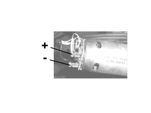

7030HD ELECTRIC PUMP OPERATION CHECK
- Path
- Test > 70 FITTINGS > 7030 SUN ROOF/GLASS PANEL > 7030H AUTOMATICALLY OPERATED HOOD > 7030HD ELECTRIC PUMP OPERATION CHECK
- Kind
- test / check procedure
- Applies to
- engines: 2.2 JTS, 3.2 JTS; all production periods; only with equipment: Spider
- Interactive page
- https://sloeber94.github.io/elrnDB-aBrrSpdr/en/#/946004031
Applies to: engines: 2.2 JTS, 3.2 JTS; all production periods; only with equipment: Spider
STEP | CHECK TO BE PERFORMED | REMEDIAL ACTION IF THE CHECK IS NOT OK |
|---|---|---|
1 | Check on the operation of the electric pump Using the Examiner voltmeter connect to the pump terminals, press the hood control button and check that there is a voltage of around 12 Volts | Check the continuity of the wiring between hood control unit and the electric pump. Replace the 30 A fuse F62 in the luggage comaprtment fuse box after having identified the cause of the malfunction. Replace the hood control unit Op. 7030H50 AUTOMATIC HOOD ACTIVATING SYSTEM CONTROL UNIT - R.R. FOLLOWING SYSTEM CHECK Replace the hydraulic unit Op. 7030H58 AUTOMATIC HOOD HYDRAULIC ACTIVATING SYSTEM MOTOR/PUMP ASSEMBLY - R.R. |

Hydraulic unit electric pump
Topics linked from this page (2)
- 7030H50 AUTOMATIC HOOD ACTIVATING SYSTEM CONTROL UNIT - R.R. FOLLOWING SYSTEM CHECK
- 7030H58 AUTOMATIC HOOD HYDRAULIC ACTIVATING SYSTEM MOTOR/PUMP ASSEMBLY - R.R.